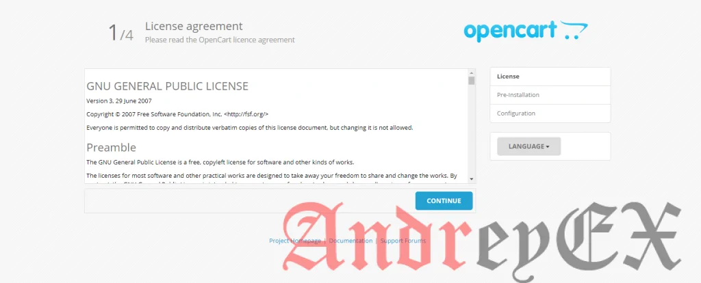

Как установить OpenCart на Ubuntu 18.04 4 мин для чтения
Главное меню » Операционная система Ubuntu » Как установить OpenCart на Ubuntu 18.04
(1 оценок, среднее: 5,00 из 5)
9 апреля 2019
OpenCart – это бесплатная корзина с открытым исходным кодом. Это основанная на PHP платформа для создания интернет-магазинов, предоставляющая все стандартные функции электронной коммерции, необходимые для управления интернет-магазинами. OpenCart имеет бесплатную пожизненную поддержку, обновления программного обеспечения и локализован на многие языки и валюты, что делает его одной из самых популярных и широко используемых платформ электронной коммерции с самостоятельным размещением. В этой статье мы покажем вам, как установить OpenCart на ваш сервер Ubuntu 18.04.
Во-первых, вам нужно будет войти на ваш сервер через SSH как пользователь root:
ssh root @ IP_ADDRESS -p PORT_NUMBER
Замените «IP_ADDRESS» и «PORT_NUMBER» фактическим IP-адресом сервера и номером порта SSH.
После входа в систему убедитесь, что ваш сервер Ubuntu 18.04 обновлен, выполнив следующие команды:
$ sudo apt-get update
$ sudo apt-get upgrade
Это обновит индекс пакета и обновит установленное на сервере программное обеспечение до последней версии.
Как только ваша система будет полностью обновлена, мы можем приступить к установке OpenCart.
2. Установите сервер базы данных MySQL
Далее мы установим сервер MySQL. Чтобы установить пакет по умолчанию, выполните следующую команду:
$ sudo apt-get install mysql-server
Это установит MySQL 5.7 на ваш сервер, но не предложит вам установить пароль или внести другие изменения в конфигурацию. Поскольку это делает вашу установку MySQL небезопасной, для повышения безопасности вашего сервера MySQL мы рекомендуем запустить скрипт «mysql_secure_installation», введя следующую команду:
$ mysql_secure_installation
Этот скрипт поможет вам выполнить важные задачи безопасности, такие как установка пароля root, отключение удаленного входа в систему root, удаление анонимных пользователей и т. д.
3. Создайте базу данных для Opencart
Теперь мы создадим нашу базу данных MySQL для нашего сайта OpenCart. Войдите на свой сервер MySQL с помощью следующей команды и введите свой корневой пароль MySQL:
sudo mysql -u root -p
В этом разделе мы создадим новую базу данных MySQL opencartи назначим пользователю доступ к ней для нового пользователя admin_userс паролем Strong_Password:
GRANT ALL PRIVILEGES ON opencart.* TO 'admin_user'@'localhost' IDENTIFIED BY 'Strong_Password';
FLUSH PRIVILEGES;
exit;
----------------------------------------------------------------------------------------------------------------------------
*******НАШ
CREATE DATABASE opencart;
GRANT ALL PRIVILEGES ON opencart.* TO 'admin_user'@'localhost' IDENTIFIED BY 'Strong_Password';
FLUSH PRIVILEGES;
exit;
Не забудьте заменить Strong_Password реальным надежным паролем.
Чтобы установить веб-сервер Apache, выполните следующую команду:
$ sudo apt-get install apache2
После завершения установки вы должны включить автоматический запуск Apache после перезагрузки сервера:
$ sudo systemctl enable apache2
Вы также можете проверить состояние службы Apache с помощью следующей команды:
$ sudo systemctl status apache2
Вывод:
apache2.service - The Apache HTTP Server
Loaded: loaded (/lib/systemd/system/apache2.service; enabled; vendor preset:
Drop-In: /lib/systemd/system/apache2.service.d
└─apache2-systemd.conf
Active: active (running)
Process: 728 ExecStart=/usr/sbin/apachectl start (code=exited, status=0/SUCCES
Main PID: 855 (apache2)
Tasks: 6 (limit: 2321)
CGroup: /system.slice/apache2.service
├─855 /usr/sbin/apache2 -k start
├─876 /usr/sbin/apache2 -k start
├─877 /usr/sbin/apache2 -k start
├─878 /usr/sbin/apache2 -k start
├─879 /usr/sbin/apache2 -k start
└─880 /usr/sbin/apache2 -k start
Поскольку OpenCart – это приложение на основе PHP, наш следующий шаг – установить PHP и некоторые расширения PHP, необходимые для OpenCart:
$ sudo apt-get install php libapache2-mod-php
$ sudo apt-get install php-cli php-common php-mbstring php-gd php-intl php-xml php-mysql php-zip
php-curl php-xmlrpc
Перезапустите веб-сервер Apache, чтобы загрузить модули PHP:
$ sudo systemctl restart apache2
Теперь проверьте версию PHP, установленную на вашем сервере:
$ php -v
Вывод:
PHP 7.2.10-0ubuntu0.18.04.1 (cli) (built: Sep 13 2018 13:45:02) ( NTS )
Copyright (c) 1997-2018 The PHP Group
Zend Engine v3.2.0, Copyright (c) 1998-2018 Zend Technologies
with Zend OPcache v7.2.10-0ubuntu0.18.04.1, Copyright (c) 1999-2018, by Zend Technologies
5. Загрузите последнюю версию OpenCart
Последнюю версию OpenCart (v.3.0.3.1) можно загрузить с веб-сайта OpenCart (рекомендуется для конечных пользователей) или напрямую с Github (рекомендуется для веб-разработчиков). Страница загрузки также предлагает доступ к предыдущим версиям OpenCart.
$ sudo wget https://github.com/opencart/opencart/releases/download/3.0.3.1/opencart-3.0.3.1.zip
$ sudo unzip opencart-3.0.3.1
$ sudo mv upload/ /var/www/html/opencart
$ sudo cd /var/www/html/opencart/
$ sudo cp config-dist.php config.php
$ sudo cp admin/config-dist.php admin/config.php
Затем выполните приведенные ниже команды, чтобы установить правильные разрешения для работы OpenCart.
$ sudo chown -R www-data:www-data /var/www/html/opencart/
Теперь мы можем создавать файлы нашего виртуального хоста. Выполните следующую команду, чтобы создать файл конфигурации виртуального хоста для вашего домена, your_domain.ru:
$ sudo nano /etc/apache2/sites-available/your_domain.ru.conf
Затем скопируйте и вставьте содержимое в файл и сохраните его. Замените «your_domain.ru» вашим собственным именем домена и корневым каталогом.
<VirtualHost *:80>
ServerAdmin admin@your_domain.ru
DocumentRoot /var/www/html/opencart/
ServerName your_domain.ru
ServerAlias www.your_domain.ru
<Directory /var/www/html/opencart/>
Options FollowSymlinks
AllowOverride All
Order allow,deny
allow from all
</Directory>
ErrorLog ${APACHE_LOG_DIR}/error.log
CustomLog ${APACHE_LOG_DIR}/access.log combined
</VirtualHost>
Сохраните файл и выйдите.
Активируйте виртуальный хост, создав символическую ссылку:
$ sudo ln -s /etc/apache2/sites-available/your_domain.ru.conf /etc/apache2/sites-enabled/your_domain.ru.conf
Перезапустите Apache, чтобы изменения вступили в силу:
$ sudo systemctl restart apache2
Чтобы получить доступ к вашей установке OpenCart, вам нужно ввести следующий URL в вашем веб-браузере:
http://your_domain.ru/
и вы увидите следующий экран:

Прочитайте соглашение и нажмите «ПРОДОЛЖИТЬ», чтобы продолжить.
На следующем экране отобразится информация перед установкой, чтобы убедиться, что установка настроена должным образом.
Наконец, вам нужно будет выбрать драйвер БД (в нашем случае MySQL) и ввести значения базы данных, которые вы создали выше, как показано ниже. Вам также необходимо создать имя пользователя и пароль для входа в раздел администрирования OpenCart.
После установки OpenCart вы должны удалить каталог Install, однако не следует трогать другие каталоги.
$ sudo rm -rf install/
Поздравляю. Вы успешно установили OpenCart на свой Ubuntu 18.04 VPS.
Если вы нашли ошибку, пожалуйста, выделите фрагмент текста и нажмите Ctrl+Enter.